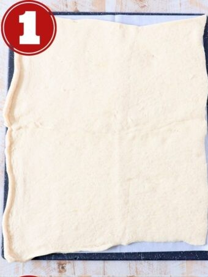
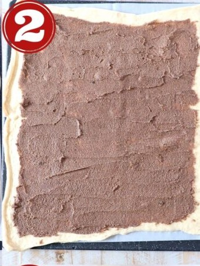
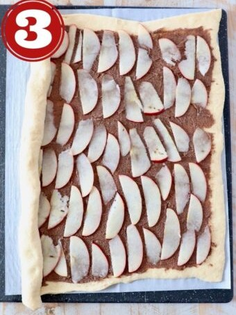
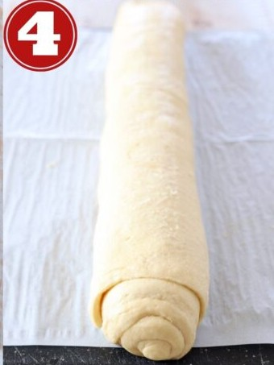
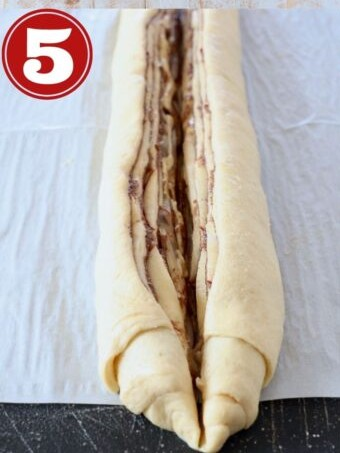
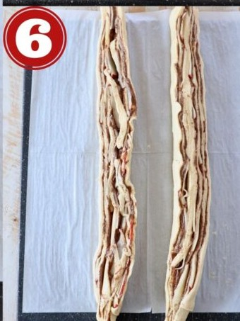
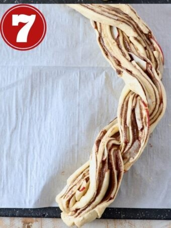
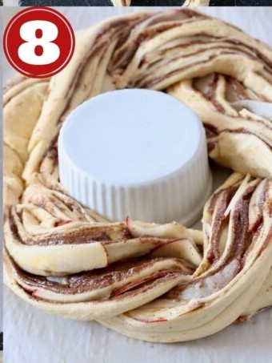

Cinnamon Roll Wreath with Apples
Ingredients

- Crescent roll dough (2 cans)
- Granulated sugar
- Brown sugar
- Ground cinnamon
- Unsalted butter, softened
- Pazazz apples
- Cream cheese, softened
- Milk
- Vanilla extract
- Powdered sugar
Step by step instructions

1. Roll out the dough. Place both sheets of crescent roll dough slightly overlapping on parchment paper and press the seams together to form one large rectangle.

2. Add the cinnamon sugar butter. Combine softened butter with granulated sugar, brown sugar and ground cinnamon, then spread evenly across the dough.

3. Add the apples. Core and thinly slice one Pazazz apple, then place the slices on top in an even layer, not overlapping.

4. Roll it up. Roll the dough tightly over the apples and cinnamon sugar butter into a tube.

5. Slice it in half. Use a sharp knife to slice lengthwise through the middle of the tube.

6. Separate the two halves. Make sure the cinnamon butter and apples are facing up on both halves.

7. Braid them together. Lift one half over the other, then vice versa, until it's rolled up into one long braid.

8. Form the wreath. Bring the two ends of the wreath together. Bake at 350°F for 20-25 minutes, or until golden brown.
The finished wreath


source: whitneybond.com